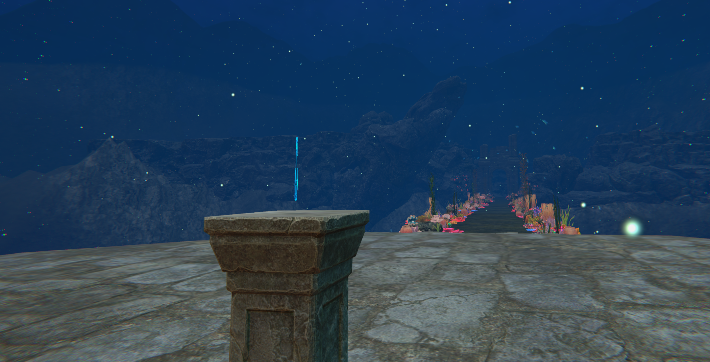
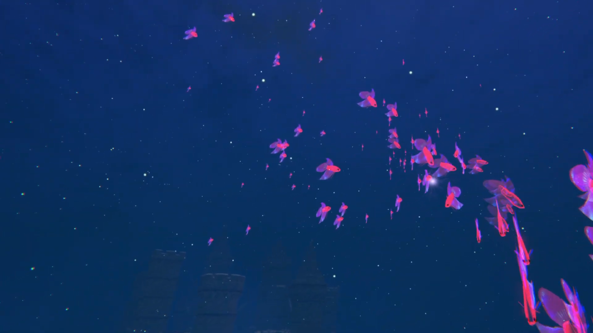
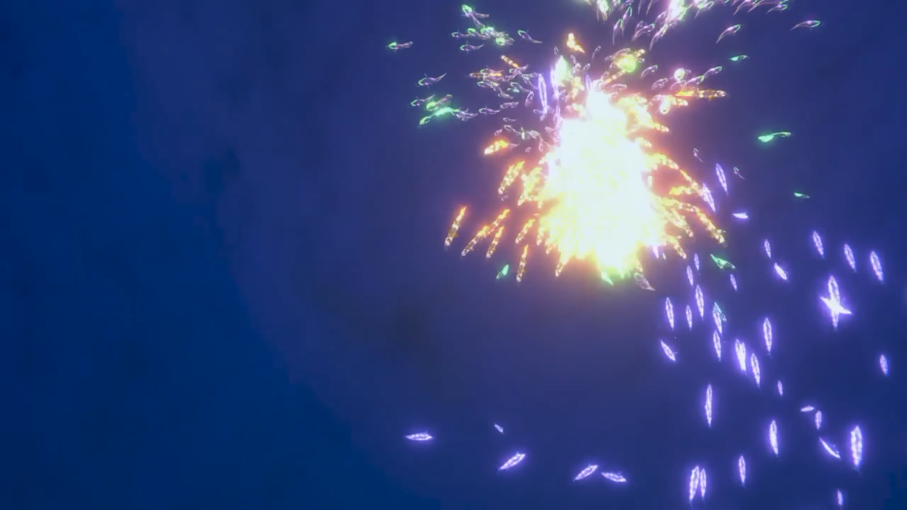
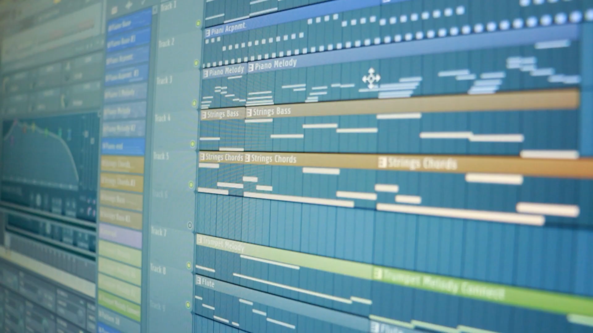
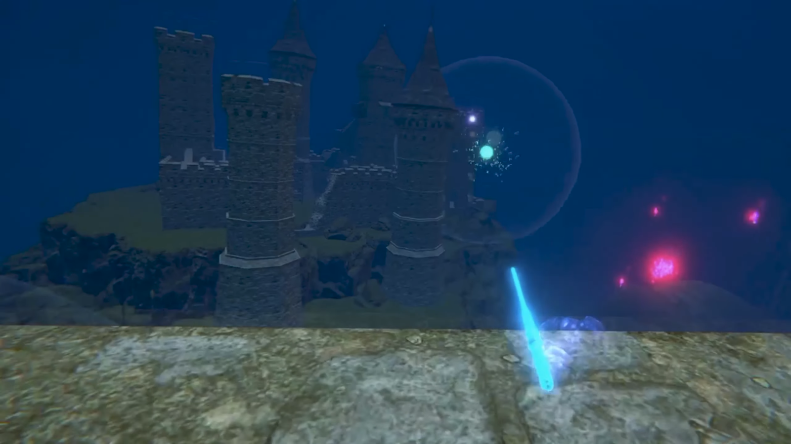
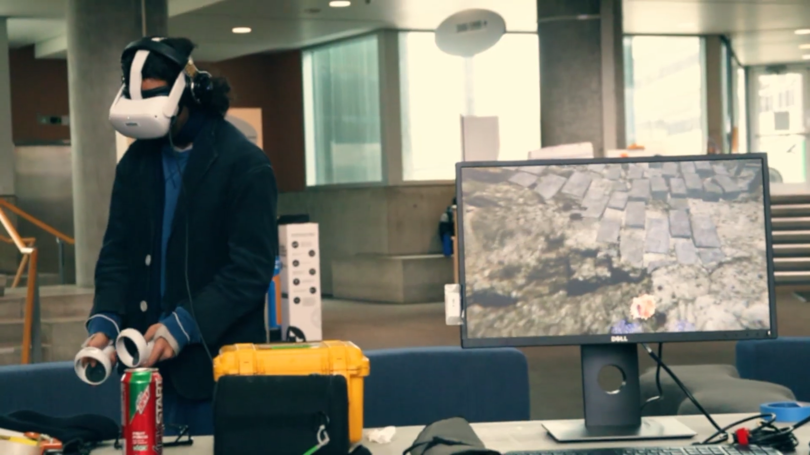

Harmony VR

VR Installation
Conduct the ocean
An immersive underwater musical VR experience where you can control the fish and the music.
Overview
Harmony is an immersive and mesmerizing VR experience in which the user explores an underwater landscape, and comes across a magical wand that lets them compose music. The wand allows players to take control of the surrounding fish by pointing at them, and as new fish are added, new layers are added to the musical composition.
Contributions
I composed and produced the different layers of music and programmed the system (Unity) that allows players to add the layers to each other and create their own sound. I also created most of the UI elements and helped with some of the development. After production, I also shot and edited the documentary including interviews with the developers(my team) and players.
The Story Behind Harmony

Concept
Harmony started as a course project for IAT445 (Immersive Environments) at SFU, where students formed teams to build a VR experience over the semester. Our team of five ended up building the whole project around music: early on we realized I had a background in composition and audio engineering, and the concept grew from there. We also wanted to learn boids, the flocking algorithm behind realistic fish and bird movement, as a team, and an underwater world full of schools of fish felt like the obvious (and honestly, unanimous) fit.

How It Works
The mechanic ties the two ideas together directly: point the wand at a school of fish to take control of it, and while you're in control, that school's instrument layer joins the music. Control fades out automatically after a set time, at which point the layer drops back out too. Take control of more schools at once and the composition builds in real time; the "song" playing at any given moment is really just a reflection of which fish you're currently commanding.

The Audio Solution
Every layer of music was composed as a single instrument, and every instrument was always playing under the hood, just muted by default. Taking control of a school didn't trigger a new sound to start; it unmuted one that was already playing in perfect time. That meant every layer was already locked to the same tempo and bar position no matter which combination of schools a player had active, so any random stack of instruments still sounded intentional instead of chaotic.

The Challenge
Players weren't given any instructions on how the "conducting" worked; they had to figure it out entirely through experimentation. Early on, that discovery process was too subtle: the mix change alone didn't clearly signal that anything had happened, so players couldn't connect their action to the result. We added a short "bloop" sound and a matching visual effect the instant a school was captured, giving players an immediate, unmistakable link between pointing the wand and hearing the music change. Once that feedback was in place, people could work out the whole system on their own.

Reception
The project was shown at our course showcase, where a steady stream of passersby stopped to play it. I interviewed people on the spot, which became part of the "Making of" documentary, and the response was consistently strong, with people specifically calling out the music as what stood out most. For the team, it was a real source of pride, each of us having leaned into a different skill, and even more so a sense of gratitude for the chance to combine those skills into something that came together as genuinely beautiful and was enjoyed by so many of the people who experienced it.
Watch Harmony in motion
Trailer
A short trailer that showcases the environments, mechanics and music.
The Making of
The documentary directed, shot and edited by me where the developers share their experience. You can also watch parts of the showcase at SFU where players gave their feedback.
Playthrough
A playthrough where you can experience the entire game played by one of the developers. Enjoy!